|
2008年5月至9月零散图片（新加坡，长沙，龙胜，桂林，阳朔）
| |
我很惭愧2008年没有拍多少照片。自2006年9月上海专题拍完以来拍摄中国的计划已基本陷于停顿。如果不是到楼下买吃的，送父母去探亲以及偶有摄友喊我出门，我一直是把自己关在家里的。2008年凉爽的秋天已经来临，我要努力改变自闭倾向，尽快开始工作。
以下三十多张图片大部分为理光Ricoh GX100所拍，另外有少数Nokia
N82手机以及Canon 1dsII的。 |
|
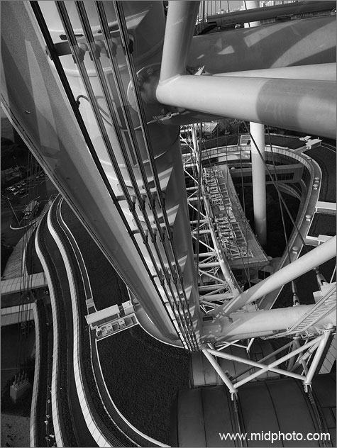
世界最高的摩天轮局部，新加坡2008年5月
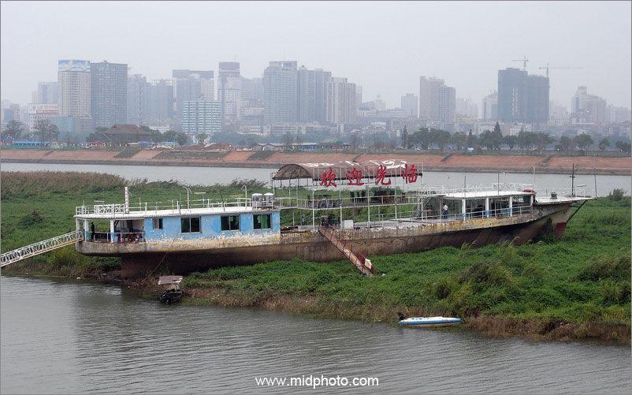
欢迎光临。湘江，湖南长沙我家附近
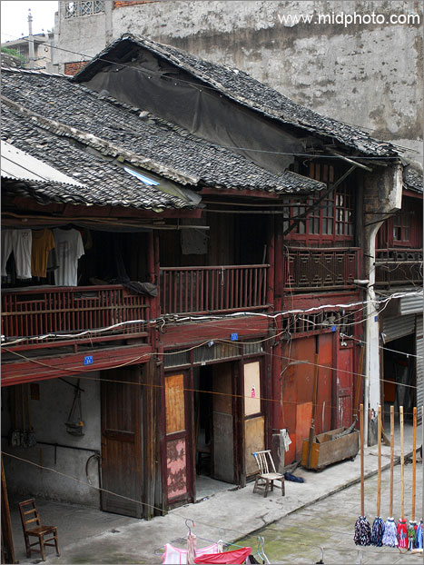
长沙湘江边的半湘街居然还有几间木头老房子，很亲切，我就是在这种老房子里长大的
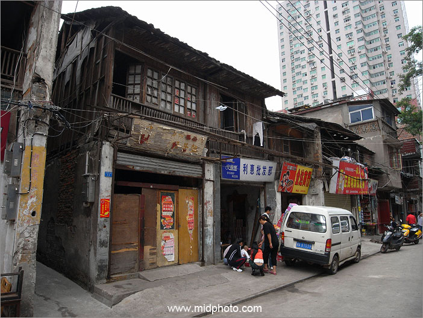
长沙下河街的砖木混合结构老房子。居民说此处很快将被拆迁。特存照留念
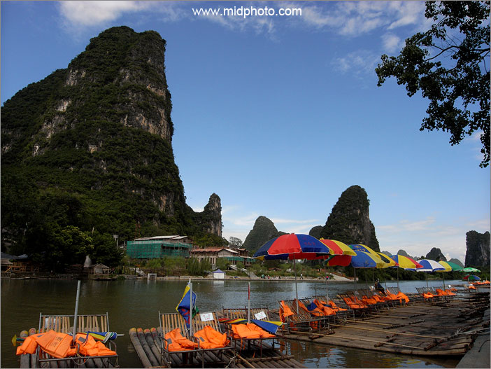
广西阳朔遇龙河，等待客人的竹筏
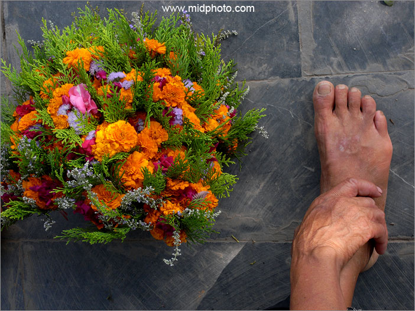
卖花人。广西阳朔
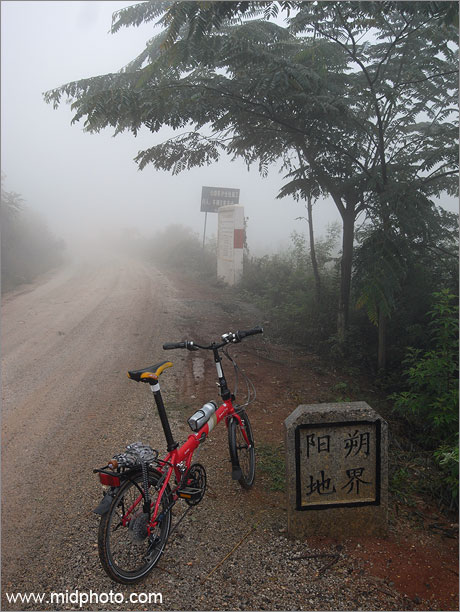
大行SP16进入阳朔地界
没有买到卧铺票，我整夜没睡。凌晨4点20在桂林下了火车，直接骑单车去阳朔。我走的是偏僻县道：桂林 - 大圩 - 冠岩 - 兴坪 -
阳朔，地图上说距离85公里。5点出桂林市区没了路灯，黑漆漆的，我忘带车灯，晕，只好停在路边等待天亮。此时我忽然超级想睡觉，但附近没有旅馆酒店。
6点半天亮了，继续赶路。从冠岩到兴坪为37公里砂石山路，上坡又长又陡，踩得我想死。我走走停停骑到上午11点才到达兴坪，离阳朔还有22公里。实在骑不动了，折叠起来搭车去了阳朔。
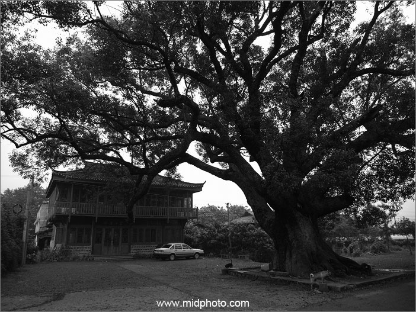
广西桂林大圩镇民居
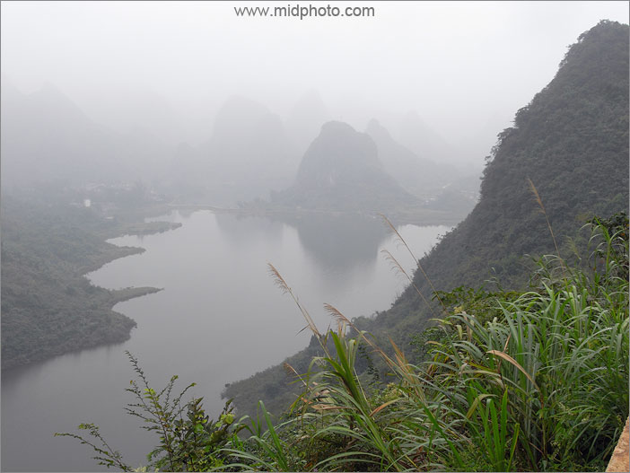
兴坪小景。冠岩到兴坪37公里砂石山路搞得我想死，一路能见度极差，时有小雨，上坡长得人绝望，下坡震得我手发麻。但这段路的景色非常漂亮。下次我准备扛大机器来拍。
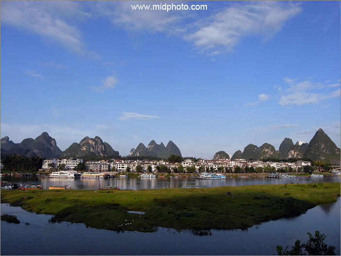
漓江边的民居。阳朔
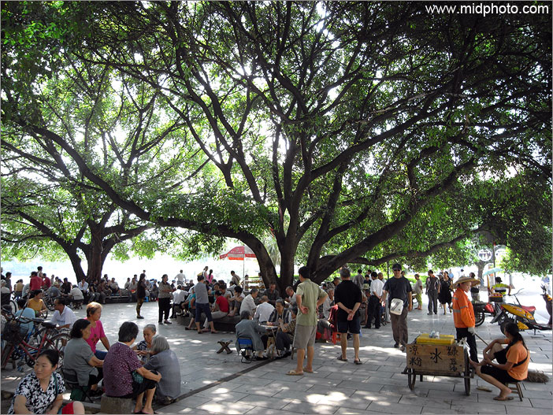
大树底下好休闲。桂林
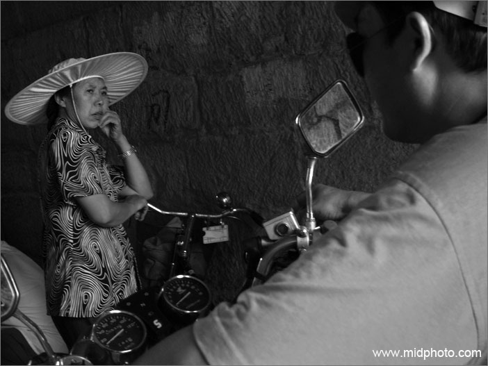
躲雨所见。桂林
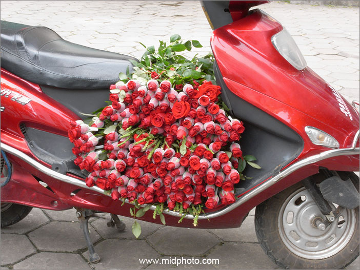
玫瑰摩托。桂林
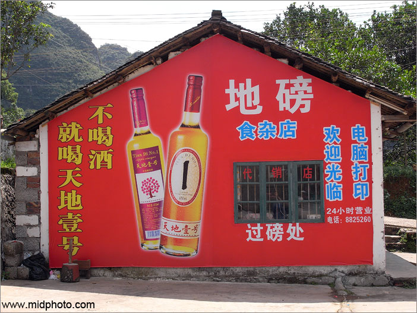
阳朔民居
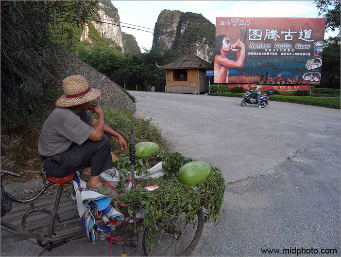
阳朔图腾古道
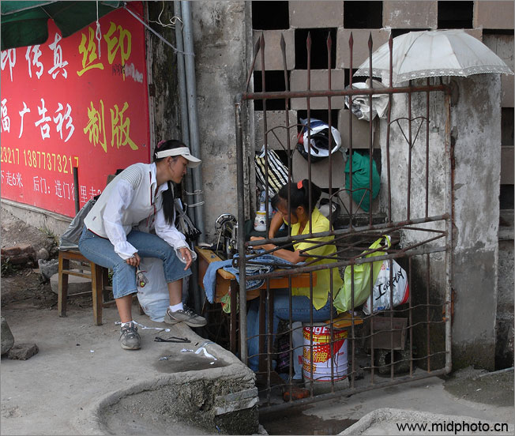
阳朔裁缝
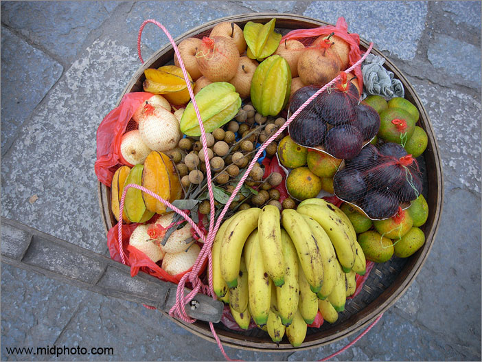
阳朔水果
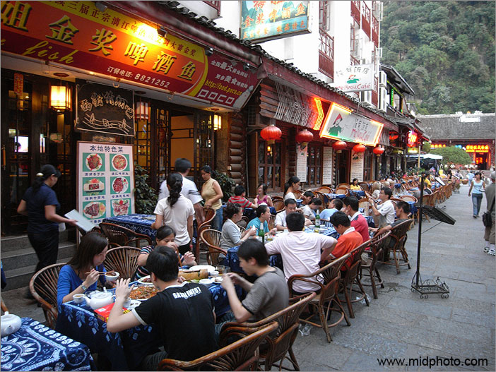
阳朔西街。当街吃饭人很多，但我感觉西街的食物很贵，有些也不好吃，还是去新城吃饭实惠。
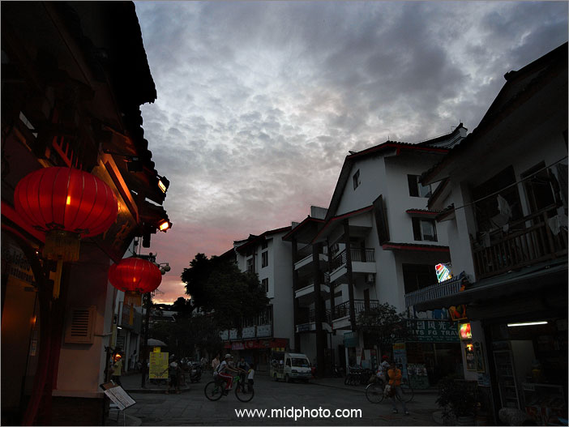
阳朔的傍晚1
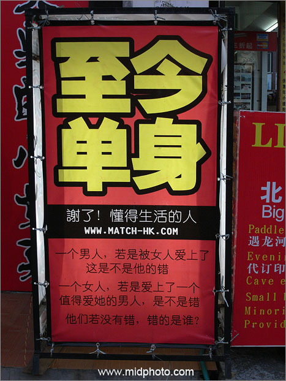
我至今单身。阳朔西街
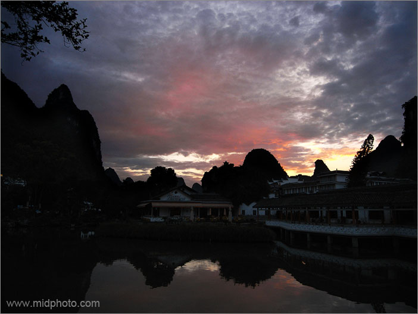
阳朔的傍晚2
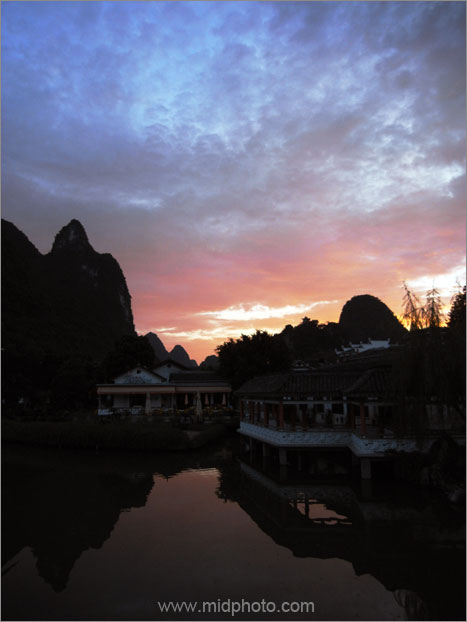
阳朔的傍晚3
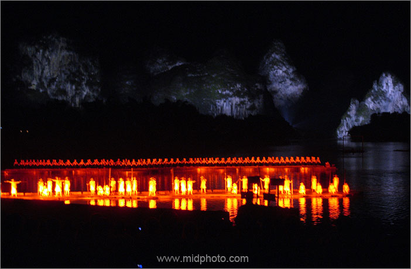
印象刘三姐漓江实景演出。视觉效果还是很好的，和张艺谋拍的一些电影差不多，比如英雄，美得只剩下画面了。演出人员多达好几百，很壮观，但我觉得再多砸些钱，弄几千人也未尝不可。这个不算本事。但现代话剧先锋一点的都搞得人莫名其妙不知所云，如果印象刘三姐也算独幕剧的话，故事都没讲清也情有可原了。本来张艺谋就不是讲故事的，他要的就是pure视觉效果，就如好莱坞的大片，不搞得地球爆炸血肉横飞决不罢休。
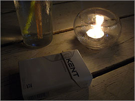
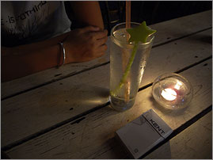
阳朔夜晚
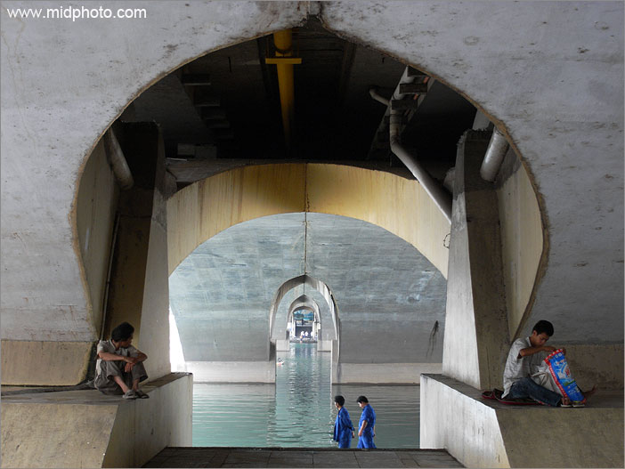
桂林大桥下
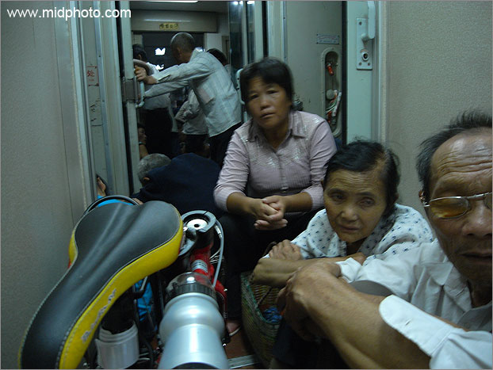
在火车上。我只买到了硬座，不知道为啥2513次列车这么多人，每站都有无数的人往上挤。一个抱小孩的女士站在了身边，我只好给她让座。车过衡阳她下车了，没想到更多抱小孩的上来了，我干脆离开座位来到车厢连接处站着
-
我的折叠单车就靠在那里。没想到这里也站着很多人，还有好几个老人，其中两个明显身体不好，一个双手扶着门把手，一个抱着头蹲着。在我对面是两位盲人夫妻，他们说着我完全听不懂的方言。我看着这些老人，心里好难过。我没有办法帮助他们，因为我只有一个座位，已经让给抱小孩的了。他们都是我们的人民。They
are my people.
凌晨1点又上来两位老人，一男一女。男的头发已经斑白，穿着那种灰色老式工作服，看样子有70多岁，走路不是很平衡，但他手里拿着很多小网兜，装着橘子
-
很青涩的。他从我面前经过，我以为他要去车厢里，赶紧搀扶一下。不想他停住说：一块钱四个。那个女的驼着背，扛着一个巨大的蛇皮袋，不停的在每个座位下面搜索，找寻塑料饮料瓶。再过一会儿，来了一个衣衫褴钕的中年农村妇女，很小心的用毛巾端着不锈钢碗走过，碗里装着一饼泡面，去车厢这端来打开水。车厢这样摇晃，她怎么能端着一碗开水保持平衡呢？但我也知道，一个碗装泡面比袋装的要贵一块钱。唉，这就是中国。你永远不了解中国，除非你整夜挤过火车硬座车厢。
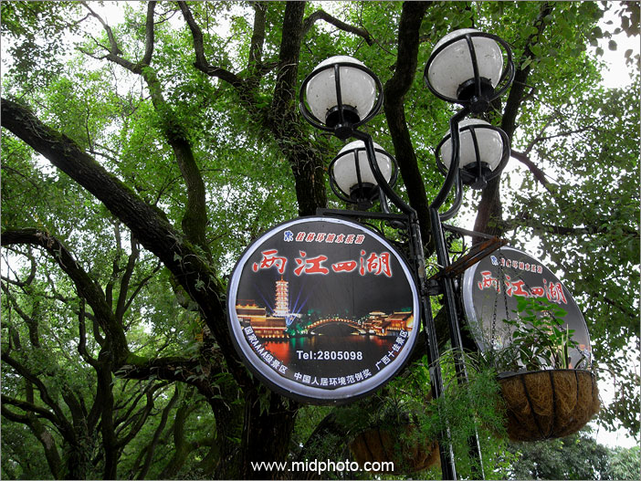
桂林的树和路灯
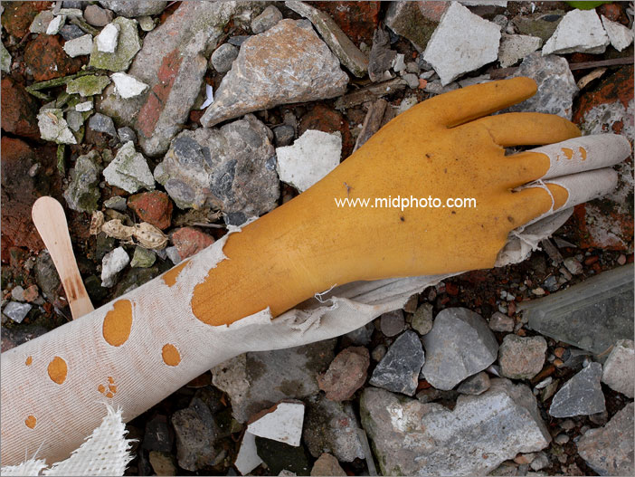
桂林垃圾场一角
广西龙胜的叶子
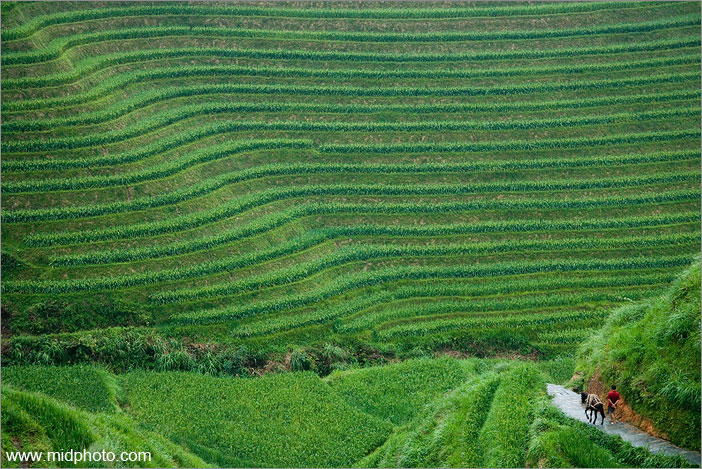
龙胜的田野
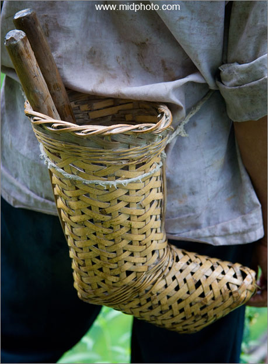
装镰刀的竹笼
- 龙胜的农夫
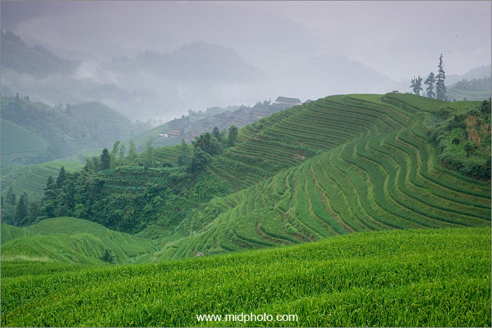
龙胜的田野2
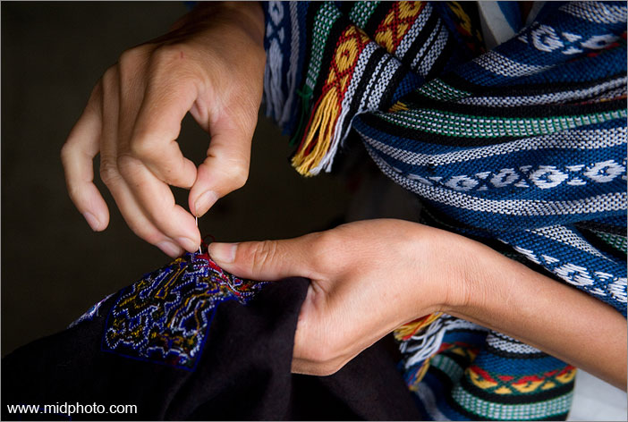
龙胜的妇女刺绣手工
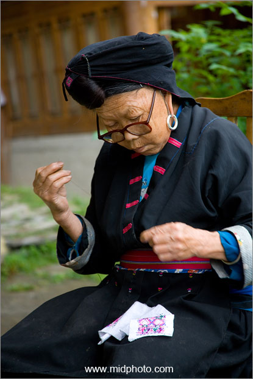
龙胜的妇女刺绣手工
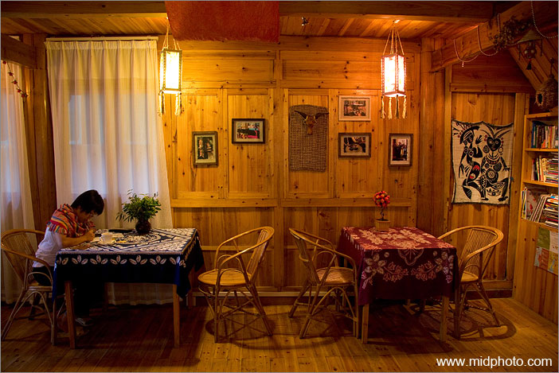
龙胜水稻田头客栈
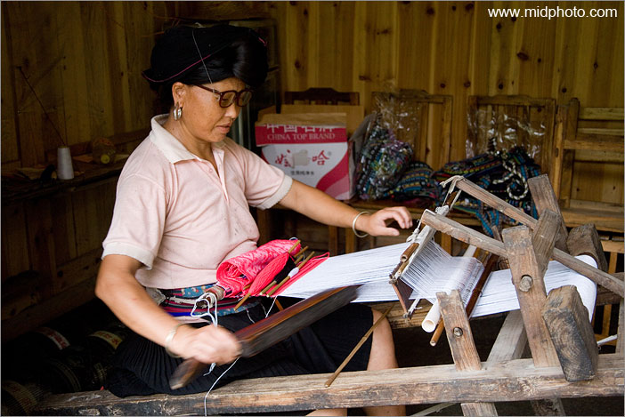
龙胜的妇女手工织布
|